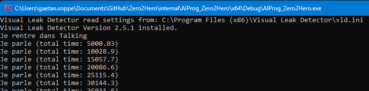

Zero2Heros : State Machine
Maintenant que l'on a l'Agent qui fonctionne, nous allons ajouter une State Machine (ou machine à état)
!
Qu'est-ce qu'une State Machine ? C'est littéralement une machine à états. Simplement, c'est une structure de
données permettant la gestion des états. Elle permet de jouer un état, de changer d'état, etc.
Mais surtout, qu'est-ce qu'un état ? C'est le comportement actuel de l'agent. Par exemple, lorsque l'agent
ne fait rien (aucune action avec la manette), il est dans l'état
d'attente (IDLE en anglais). Si nous prenons l'agent qui représente le joueur dans un jeu, tant que le
joueur ne fait rien (aucun mouvement de sa touche), l'agent est en
attente.
Lorsque le joueur appuie sur la touche de saut, l'agent passe à l'état SAUT. À la réception du saut, si le
joueur n'a pas fait d'action, l'agent repasse dans l'état ATTENTE.
On voit qu'il y a un lien entre les états, que nous pouvons représenter comme suit :
Dans cet exemple, notre machine à états (State Machine) possède deux états distincts.
Nous allons donc ajouter ces deux états dans notre code.
Cependant, avant d'ajouter la classe STATE (état), il est important de noter que ATTENTE et SAUT sont des
réalisations du concept d'état.
En C++, pour illustrer cette idée, nous utilisons les classes abstraites. Une classe abstraite est une
classe dont on ne peut pas instancier car certaines fonctions n'ont pas de définition. Dans notre cas, le
concept d'état se présente sous la forme d'une classe abstraite. Les
fonctions d'entrée, mise à jour et sortie ne seront pas spécifiées, mais elles seront définies dans les
classes dérivées.
class STATE
{
public:
virtual void Enter() = 0; // permet d'initialiser l'etat
virtual void Update( const float dt ) = 0;
virtual void Exit() = 0; // permet de nettoyer l'etat
};
On note l'apparition de mots-clés virtual, ainsi que = 0. Pour en savoir plus sur
les fonctions
virtuelles et les vtables, je vous recommande de consulter le lien
suivant : https://blog.darbotron.com/c-low-level.
La classe STATE est donc abstraite (aussi appelée Interface, donc souvent nommée ISTATE), et il n'est
pas
possible de créer d'objet à partir d'elle.
Nous avons besoin d'avoir des classes enfants qui définiront les fonctions notées = 0.
Le code pour créer les classes état d'attente et état de saut est le suivant :
class IDLE final : public STATE
{
public:
void Enter() override { }
void Update( const float dt ) override
{
// if m_is_jumping is false and we are pressing the jump button
// set next state to jump
}
void Exit() override { }
private:
bool m_is_jumping = false;
};
class JUMP final : public STATE
{
public:
void Enter() override { }
void Update( const float dt ) override { }
void Exit() override { }
};
Nous avons besoin de créer une classe STATE_MACHINE qui contiendra les états et leurs transitions.
Cette classe doit pouvoir ajouter et retirer des états à la machine (changer l'etat courant).
class STATE_MACHINE
{
public:
void Update( const float dt )
{
if ( m_current_state )
{
m_current_state->Update( dt );
}
}
void ChangeState( STATE* new_state )
{
if ( m_current_state )
{
// on a un etat en cours, on sort
m_current_state->Exit();
}
m_current_state = new_state;
if ( m_current_state )
{
// on a un nouvel etat en cours, on entre
m_current_state->Enter();
}
}
private:
STATE* m_current_state = nullptr;
};
Maintenant que nous avons les états et la machine à états, il est temps de compléter la classe AGENT.
class AGENT
{
...
private:
std::unique_ptr< STATE_MACHINE > m_state_machine = nullptr;
};
L'utilisation des smart pointers std::unique_ptr nous permet de gérer la mémoire
automatiquement.
Mais nous devons créer le pointeur à la création de l'objet AGENT, donc au moment de l'appel du
constructeur.
Le destructeur du pointeur sera automatiquement appelé à l'appel du destructeur de l'object AGENT.
Pour plus d'informations, n'hésitez pas à lire Effective Modern C++.
// dans agent.cpp
AGENT::AGENT()
: m_state_machine( std::make_unique< STATE_MACHINE >() )
{ }
Ajoutons un etat par default, qui fait "parler" l'agent toutes les 5 secondes.
class TALK_STATE : public STATE
{
public:
void Enter() override
{
m_timer = 0.0f; // initialisation du timer à 0
}
void Update( const float dt ) override
{
// une variable static qui permet de debugger le programme
static float total_dt = 0.0f;
total_dt +=dt;
m_timer += dt;
if ( m_timer > 5000.0f )
{
std::cout << "Je parle (total time: " << total_dt << ")" << std::endl;
m_timer = 0.0f;
}
}
void Exit() override
{
m_timer = 0.0f; // initialisation du timer à 0 (optionnel)
}
};
Nous constatons que changer le comportement de l'agent devient trivial. En effet, il suffit juste de faire
évoluer les états dans la STATE_MACHINE pour ajouter ou enlever des comportements.
Tout la gestion de l'action est contenue dans l'état. Ce qui nous permet d'éviter de recompiler le code de
l'agent à chaque changement dans l'état.
Ou encore de rajouter à la volée des états. Le système est très dynamique et chaque partie est indépendante.
C'est pour cela que les machines à états sont tellement utilisées dans les jeux.
La limite de ce système est que tout devient très complexe à force de rajouter des états et les
interconnexions entre ces états.
C'est pourquoi l'on cherche toujours de nouveaux systèmes (comme les HFSM, comportements en arbre, HTN,
GOAP, etc.)
Et le résultat:

Maintenant, on va ajouter un système de messages. Cela nous permettra de faire "discuter" les agents entre eux.